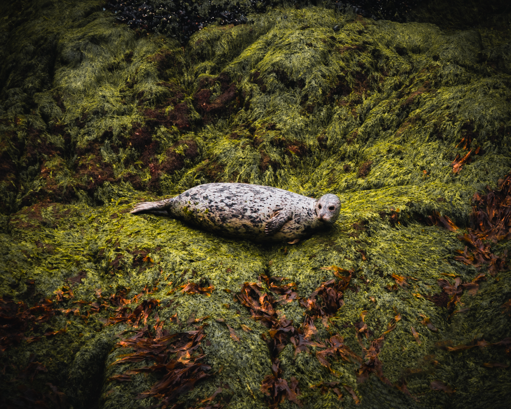
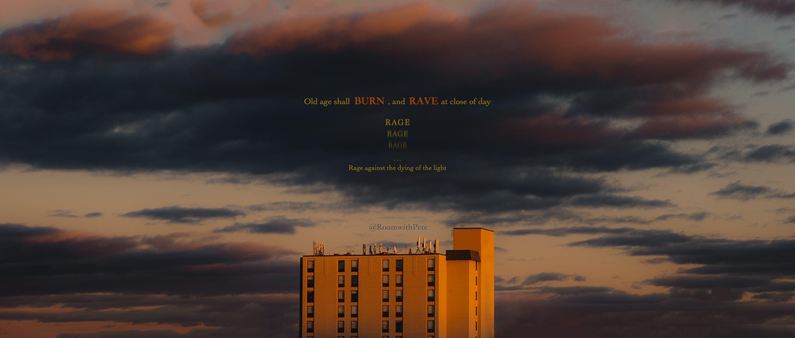
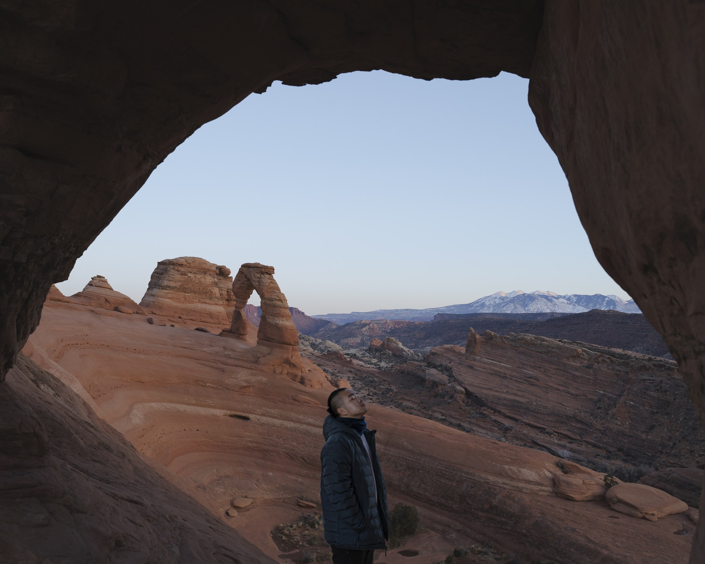
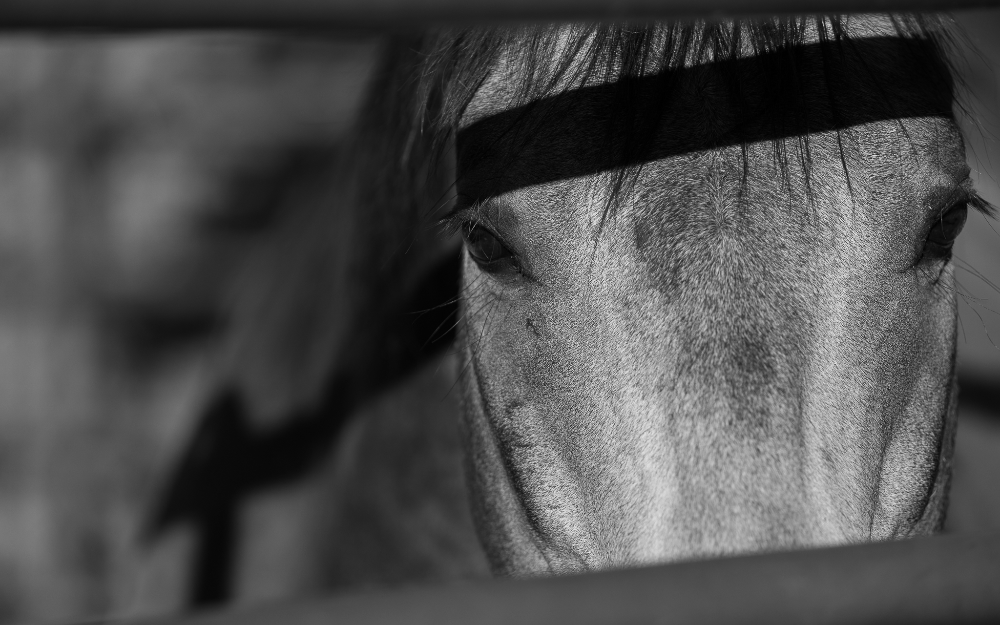

Vancouver, 2019
Boston, aka Home, 2020

Idaho, 2021

2022 – 2025, RoamWithPete

I started this as Adventureaheadpx — just casual memories. After-school sunsets, weekend hikes, moments I wanted to share with family and friends, nothing more thought out than that.
Somewhere along the way it stopped being casual. I started to actually focus in — it became a symbolic feeling I found myself wanting to share more and more, and the more I put into it, the more I felt back.
That's why "ahead" became "roam." Ahead only points one direction — forward. Roaming moves through all of them, spontaneous, no fixed line. Every direction I wander into is its own story, told through my eyes.



"Photography and design turned out to be the same eye, pointed in two directions." — Peter XuSee All Collections